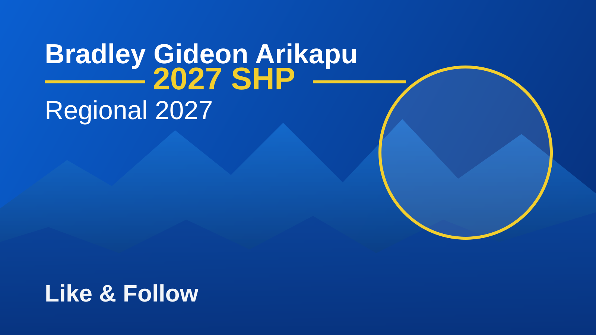

Executive Summary
Bradley Arikapu is a policy-first SHP leader committed to restoring public trust through accountable service delivery and modern governance.
Heritage
Rooted in North Kagua (Area 251), Bradley’s campaign is grounded in community realities and province-wide unity.
The Problem
Despite generating major national wealth, SHP remains underdeveloped due to weak systems, insecurity, and politicized resource allocation.
The Solution
Tech-forward administration, transparent provincial assembly reporting, and policy over patronage.
Support Bradley 2027